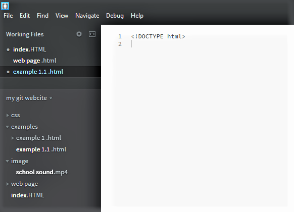
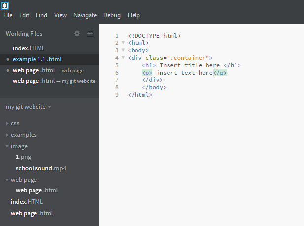

Welcome, to the website I created to teach others how to do the same.
This website is an atempt to teach my understanding of website coding and design...
How to Get Started with Brackets
(steps to use Brakets )
- Make sure you have Brackets downloaded on your device.
- Open it, to be sure it works.
- Leave
Brackets and open files on your device. - Create a folder, name it what you want, ( I am not going to tell you how to live your life)
- Make sure the file has the right .________, for instance: .html, .mp4, etc..
- Start the document.
- First type <!DOCTYPE html>
- Then <html> a copy of that should apear next to that or below that, don't erase it, or else you will need to type it in again later. (and that would just be a waste of time)
- Then <html>, again do not erase the one that apears with it. Also, make sure the <html> tags are inside the <html> tags.
- Then you need a title! for that you should use a <h1> tag, and like all the other tags, another one will apaer, and like all other tags do not erase it.
- With the <h1> tag, there are many others, the only difference is that the font size becomes smaller. to do that replace the 1 with 2 or, 3 or, 4 or, 5 or, 6... all that changes is the font size.
- Then you may use the <p> tag to add normal text.


So There You Have It! That, is how you can start to make a website using html
How to use Adobe Media Encoder to encode a video for a website!
(how to use Adobe Media Encoder)
- Like with Brackets, you need to make sure you have Adobe Media Encoder downloaded on your device. (without it, trying to use it would be imporbable, you could probably find a way to use it but I kinda doubt it)
- Open it (to be sure it works)
- Chose a video that you wish to emcode. (I used one from school, I just cut a bunch out, and added randome sound effects.)
- For the
audio a good portion of it should be done, just to make sure though... - audio codec: AAC
- sample Rate:
- sample Rate:
- channels: mono
- bitrate: 80
- for the video, there are very few things that need to be changed.
- width:480
- height:270
- frame rate:30
- aspect: square pixels
- target bitrate & maximum bitrate: 1.5
- the difference between the before and after of the difference for me a leaststarted at 7.4mb after I used the Adoibe Media Encoderit became 5.80mb.
_LI.jpg)
_LI.jpg)
*note:This is not a reliable scource, and should not be used for anything important.